Game Rules
Minesweeper
The Goal
The goal of Minesweeper is to explore all the safe squares on a given board, sweeping the board by identifying and avoiding the locations of explosive mines. YouStarting the Game
Games always start out the same: you are given a board where all squares are unexplored. Start the game by uncovering your first square. This is done by clicking or tapping any square on the board.If you're unlucky, this will uncover a mine immediately
A decent starting board
The more squares uncovered the better. And so if all you got was one or two numbers, click around the board some more before moving on.
What in the World Do These Numbers Mean?
Numbered squares are safe squares. Each square's number represents how many mines it is touching. This is measured in all directions: left and right, up and down, and even diagonally. If a square is white and has no number, that means it is touching 0 mines. These are filled in for you.For instance, in the example below, a 2 has been unearthed. This means there are 2 mines hiding somewhere in the surrounding squares, which have been colored in red here. 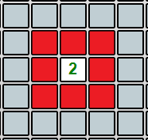
We know that there are 2 mines in the surrounding (red) squares
Mines and Flags
A helpful tool in most Minesweeper games is the flag. When you think you have identified a mine location, right click on that square to flag it. Alternatively, you can check the "Flag Mode" checkbox beneath the board and then click/tap away. This will not uncover the square. Instead, it marks the square and makes it so that you cannot accidentally uncover it. Flagging is totally optional. It is not required to win the game. 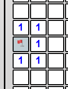There must be a mine here. Flag it to remember this for later
The top right corner of the board has a flag counter. Initially, this number matches the number of mines on the board. Each time you place a flag, this number goes down by one. But don't worry! This doesn't mean you have to ration your flag supply. You can place more flags on the board than there are mines, but you will obviously need to sort out the discrepancy later.
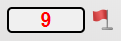
The flag counter
Another thing to note is that placing a flag doesn't guarantee that there was a mine there. The flag counter may go down by one, but that doesn't mean that you correctly identified where a mine is.
Game Example
So let's get back to the board we got after the first square was uncovered: In the top right, we see that there are 3 mines. Since there are only 3 squares there, all of those must be mines. So let's flag them.Another thing we can see is that, on the left side of our board, there are a bunch of 1's. Notice that one of them is touching only one square (highlighted in green below). There has to be a mine there, which helps us know where there isn't a mine. Namely, if we have identified a mine adjacent to a 1 square, then every other adjacent square must be safe, since the 1 has been "used up." We can safely uncover these.
So our board ends up looking like this: 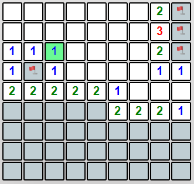
Making progress
Similarly, we can see there is a 2 that is only touching 2 unexplored squares (highlighted in green below). We can flag those squares and safely click around this area. In the process, we uncovered a grouping of 0's, which gives us a lot of good information.
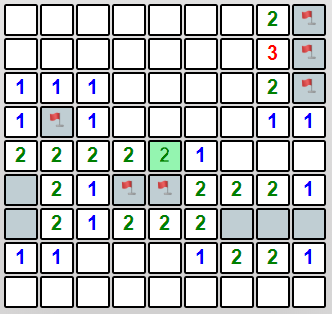
Uncovering more and more information as we go
From here, the rest is fairly straightforward and logical. And before you know it...
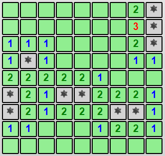
A completely "sweeped" board
You'll have sweeped the board!
Sudoku
The Goal
The goal of Sudoku is to completely fill in the 9x9 puzzle board with the numbers 1-9. The numbers must be placed such that each is used only once per row, column, and block. In other words, all numbers 1-9 must eventually be present in every row, column, and block.- Row = the horizontal row that the number is in.
- Column = the vertical column that the number is in.
- Block = the 3x3 block that the number is in. There are 9 of these fixed, outlined blocks on the board.
Starting the Game
With every new Sudoku puzzle, you will be given a certain amount of pre-filled-in numbers on an otherwise empty board. Depending on the difficulty level, you will be given either many of these numbers (easy) or very few (hard), but the idea is the same: scan the board looking for squares that can contain only one of the numbers 1-9. If this can be deduced, then that number has to go in that square, and now the search can continue with even more information than before. 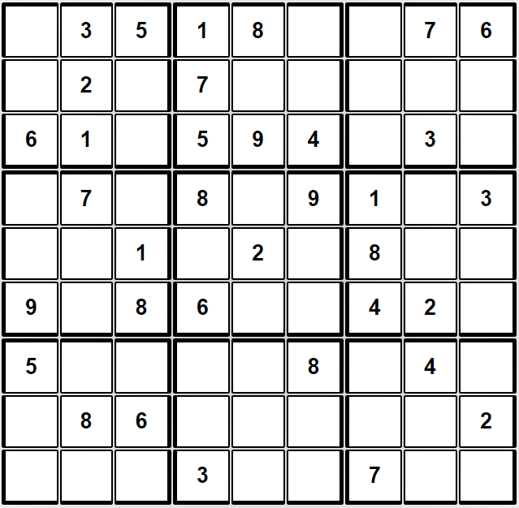An "intermediate" level starting board
Figuring Out Where A Number Goes
This is the tricky part. In a brief statement, a number is correct if it has to go in the square you placed it in. This is admittedly vague and unhelpful, but the concept is important: you're trying to find where numbers have to go. You should never have to guess.This works in a few ways. Let's take a look at some strategies that may be helpful to remember:
- Remember that rows, columns, and blocks all must eventually contain every number 1-9. So, if any row, column, or block has only one square remaining, then just do a quick check to see which number is not represented and place it in the remaining empty square.
- Try picking a row, column, or block and focusing in on it. Go through the numbers 1-9 individually and see where the numbers can and can't be. In doing so, if you find that a number can't go anywhere else in whatever context you chose (row, column, or block) except for one square, then you can place the number there.
- This is perhaps more advanced, but you can try to spot where every possible number for a given context can't go. If, for a particular square, you notice that it can't validly contain any number expect for one, then you can place the number there.
Inputting a Number
After you have found where a number goes, simply click/tap on the corresponding square and select the number from the pop-up menu. To clear an entry, select the blank space at the bottom of the menu. 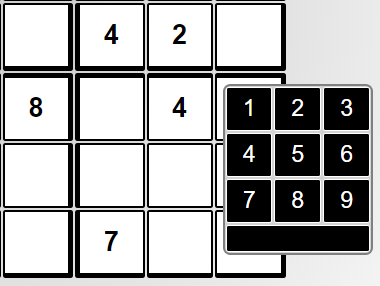Inputting a number
Checking Your Progress
There is a "Check Progress" button located above the puzzle board. It may be helpful to click/tap this occasionally as you go to validate that your entries are logical and conform to the rules of Sudoku. 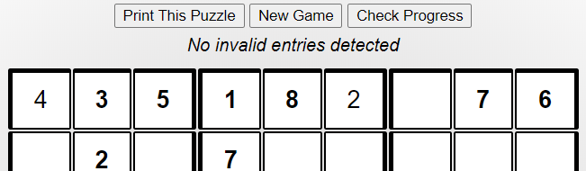The 'Check Progress' button
How to Win
The "Check Progress" button (see above) must be clicked/tapped upon completion of the board toDoes This Version Have Number Notes?
It does! For example, to take note that a square could contain 1, 3, or 7, go to the top right corner of the square and type these numbers in the text field. This is totally optional. 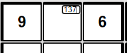Number notes
Game Example
Below are three examples of valid, logical number placements. In each, the number placement is highlighted in dark blue, and the logical context is highlighted in light blue. Notice in each example that the placed number could not have gone anywhere else in its context. 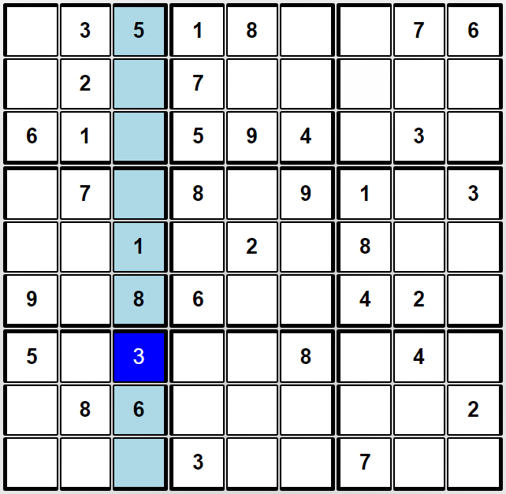Logical step: column
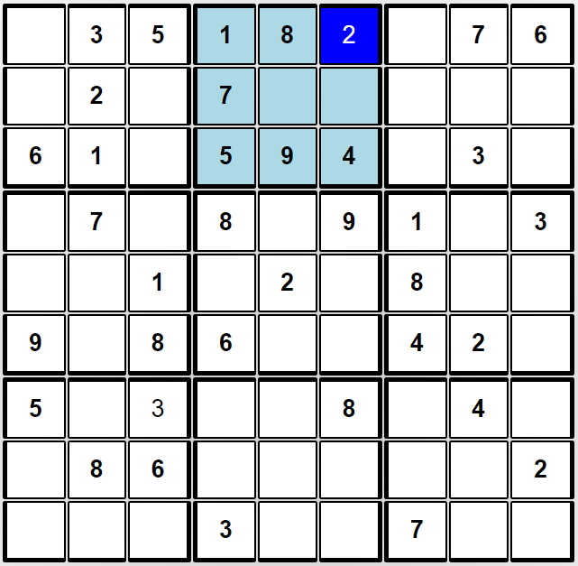
Logical step: block
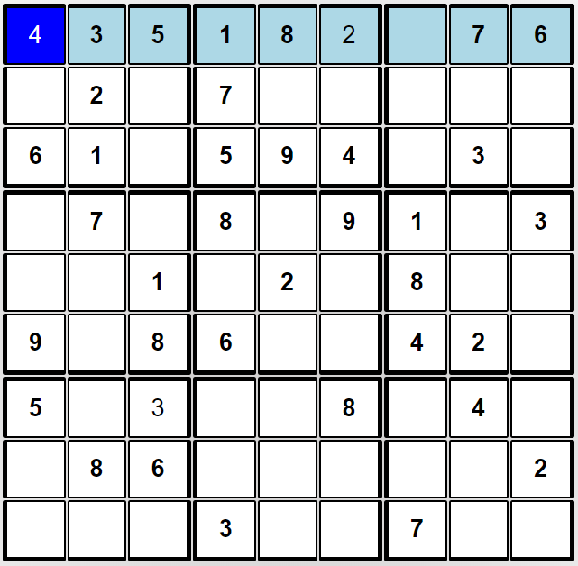
Logical step: row
Can you see where other numbers must be placed? As more numbers are found, the game becomes easier. For instance, that top row now needs just one more number. The only number not represented in that row is 9, so placing a 9 in that last open square would be completely justified and correct. Continue until you have found where all the numbers go.
Checkers
The Goal
Beat the opposing player. YouHow It All Works
Each player starts with 12 checker pieces. To start, these checkers are always positioned on opposite sides of the board. Checkers are only ever on the board's dark squares.The pieces that are "closer" (lower down the board) are yours to start, while the pieces that are "farther" are the opponent's. The pieces are colored based on the player. Players are allowed one move or jump per turn. After this, their turn is over, and the opponent must make a move/jump. 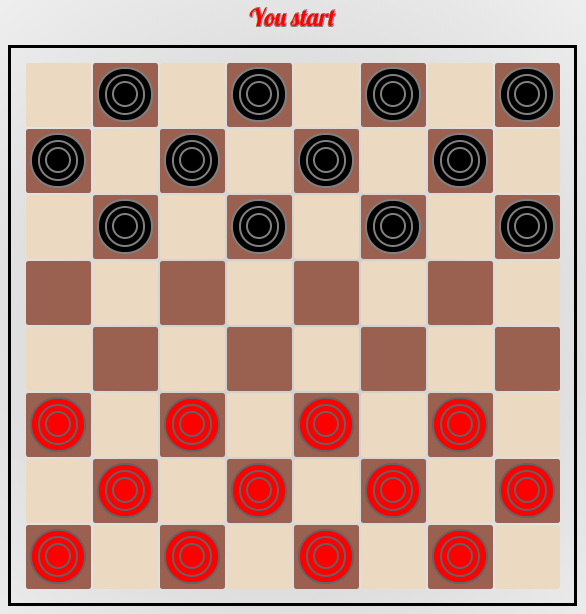
Starting board
How to Move
The most basic thing you can do per turn is move a checker piece. Players always move forward toward the opponent's side of the board (expect when moving a king piece, see below), and a move can only advance a piece diagonally and by one row.A move is valid only when the destination square is empty. In other words, the destination square must not be currently occupied by a checker piece, whether it be yours or the opponent's. 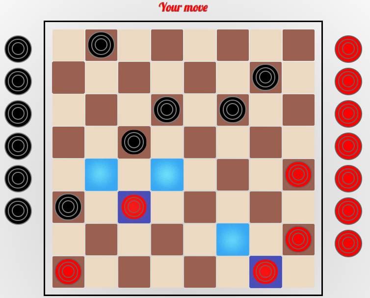
Examples of available moves from this position
Notice that the checker highlighted on the left has 2 available moves, while the checker on the right has 1 available move.
Online here, you can move a piece in two ways. You can drag the piece to its destination, or you can click/tap the piece and then click/tap the destination square.
What About Jumps?
Jumps can be done when an opposing checker piece is diagonally adjacent to another piece, and the square diagonally behind the opposing checker is empty. Jumping a piece has the effect of capturing it, removing it from the board. It is important to note that jumps are compulsory, meaning a player has to take a jump if there is one available. 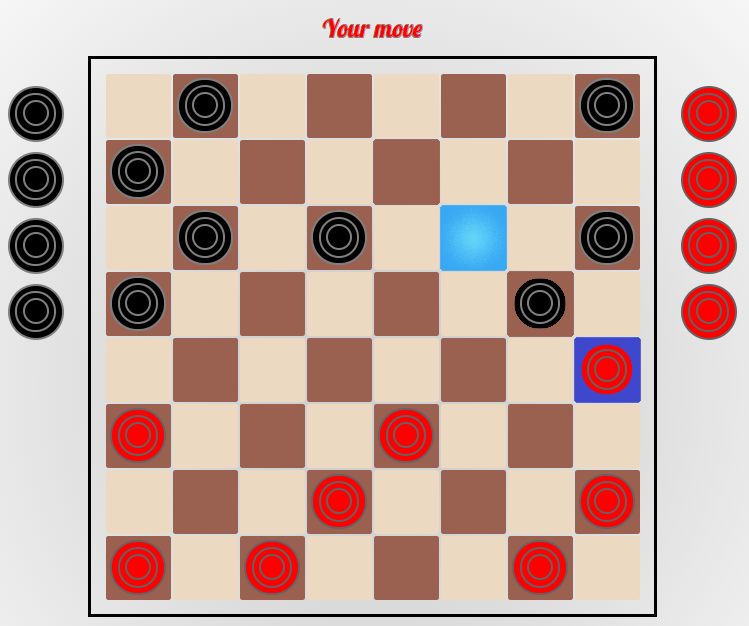Jumps have to be taken
Despite all the available moves in this position, the jump highlighted in the top right must be taken. This jump is the player's only available course of action.
Multiple Jumps
Here's where things get more interesting. If, after making a jump, you can make additional jumps with that same checker piece, then you can go ahead and do them in the same turn. Contrary to official Checkers rules, my version does not force a player to fully execute multiple jumps. If you wish to stop after single-jumping the opponent's piece (or you just don't see the multiple jump), then you may do so. However, it is typically desirable to take advantage of multiple jumps when they do appear.
The highlighted checker can do a double jump
Kinging
The last major rule in Checkers is kinging. When a checker piece has reached the opponent's back row, it becomes a king checker and is marked with a stylish yellow crown. Kings are special in that they can move forward and backward with their moves and jumps. This makes them pretty powerful. 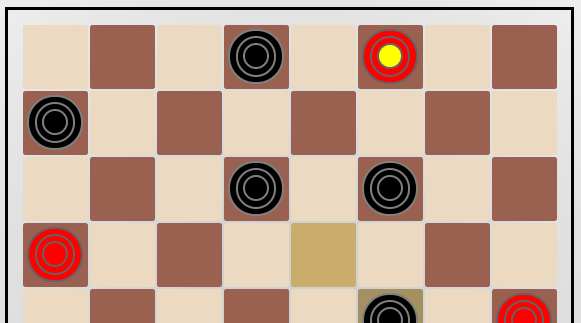The checker at the top was just crowned as a king
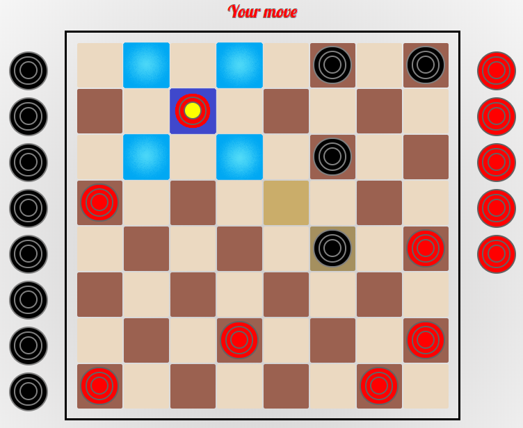
Kings can move forward and backward
Draws and Resigning
There are 2 conditions under which a draw can happen. A draw means that the game ends with no winner; both players are credited equally for the game's result. The 2 conditions are...- When the players agree to a draw. A draw offer can be initiated by clicking the "Offer Draw" button below the board in the "More Options" tab. You can only offer a draw once per turn.
- When no jumps or kinging moves are made in a continuous 100 move span. This is an arbitrary rule that this version of Checkers follows. It is not an official Checkers rule.
If you ever feel like your position is hopeless against your opponent, it is courteous to resign. This essentially means you concede the victory to your opponent. You will

Draw and resign features
Colors
It was brought to my attention that some of the checker pieces did not adequately contrast with the board, making the pieces hard to recognize for some people. If ever you feel the same way, or if you just want to spice things up, feel free to change the colors of the checker pieces in the "More Options" tab. 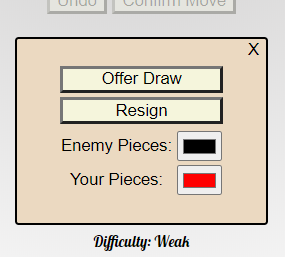Color Options
Strategy
The 'Strong' and 'Grandmaster' difficulty levels are pretty tough. You'll need to use some strategy to beat them:- Make sure the moves you make are safe. Don't give the opponent a free jump.
- Try to secure the edges of the board. On the edges, your pieces cannot be captured.
- Take advantage of the fact that jumps are compulsory. Look for clever sacrifices, and watch out for opponent sacrifices.
- Tradeoffs aren't bad. They can even benefit you by giving you more space and control of key squares.
- Try to look ahead a couple of moves. The 'Strong' and 'Grandmaster' players excel at this.
Snake
The Goal
The goal of Snake is to slither around the board and collect all of the fruit pieces. YouFruit Pieces?
To start, a piece of fruit will be randomly placed on the board. You can "eat" the fruit by moving to it and passing over it with the snake's head. Eating a piece of fruit makes the snake grow one square longer. In the picture below, the snake is white, and the piece of fruit is the red circle. 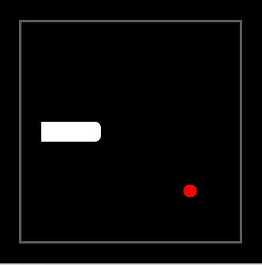Starting Snake board
Game Play
To start the game, push any of the arrow keys or 'w', 'a', 's', or 'd' on your keyboard. If playing on a mobile device, swipe in any direction on the game board.After the game has started, the snake will move at regular, quick intervals. Be quick! You will have to frequently change the snake's direction so that it doesn't just run into the wall! The snake's body always follows the head. By pushing any of the arrow keys, WASD, or swiping, you can change the direction of the head (and therefore the entire snake). The goal is to navigate toward the fruit while avoiding your own trail as well as any walls. 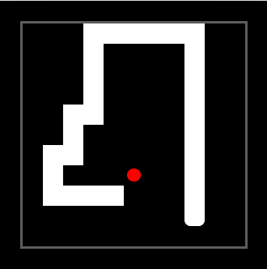
The snake has gained a few pounds
As the picture above shows, the game gets progressively harder as you collect more fruit. The game of Snake is all about dexterity, quick decision making, and timing.
Scoring
Snake is a hard game, so don't expect to win on your first try. Even if you don't win, try to beat your high score. You gain one point for every fruit you manage to consume. It should be noted that scores are recorded based on the current game options. High score data is saved by categories of speed, number of rows, and number of columns. Changing any of these game options (see below) will display new high score data relating to the newly chosen options. 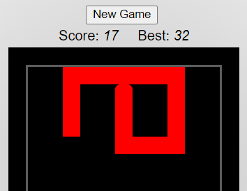Try to beat your high score
Game Options
Click/tap the 'Options' button below the game board to see a menu of various changes you can make to the game. 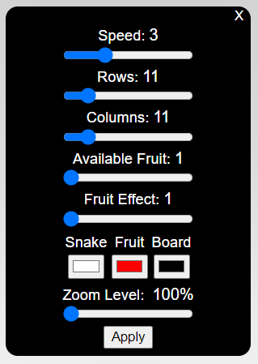Change the game according to your preferences.
Shown above are the default choices
Alter these options to your liking. You can change...
- The game's speed. 0 = slowest, 10 = fastest.
- The number of horizontal rows on the board. Min = 4, Max = 50.
- The number of vertical columns on the board. Min = 4, Max = 50.
- How many fruit are displayed on the board at any one time. Min = 1, Max = 6.
- The fruit effect, or how much each fruit adds to the snake's length. Min = 1, Max = 10.
- The colors of each game element.
- The zoom level and relative size of the board. Your choice of 100%, 150%, or 200%.